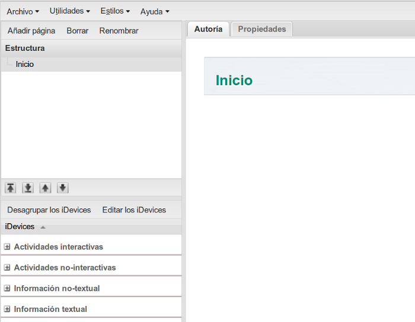
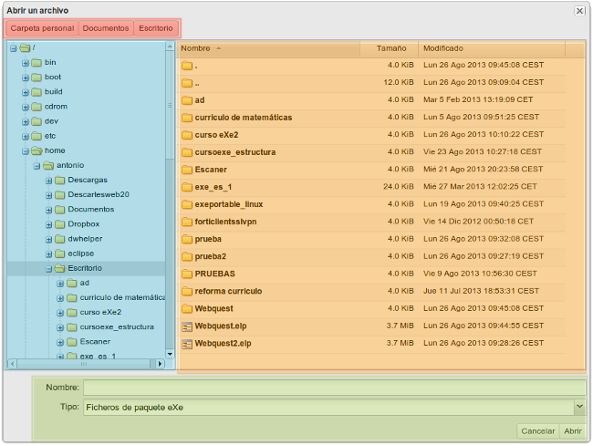
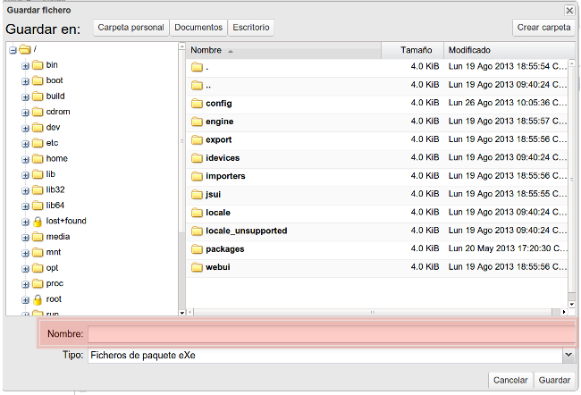
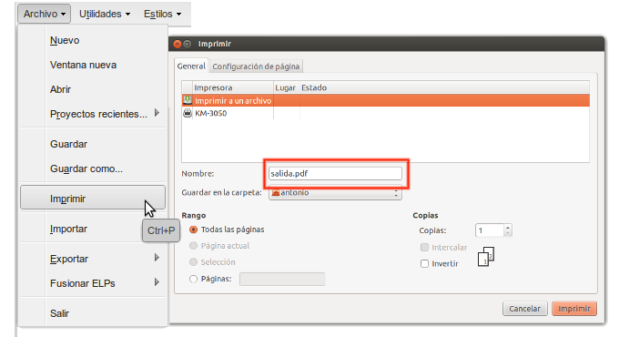

Archivo
En el menú "Archivo" dispondremos de las opciones básicas de abrir, guardar y exportar archivos además de opciones como imprimir, importar y fusionar ELPs 
Nuevo / Ventana nueva / Abrir / Proyectos recientes
Nuevo: abriremos un nuevo archivo eXe completamente vacío.

Ventana nueva: abriremos en una pestaña nueva una copia del archivo que estamos trabajando.
Abrir: abriremos el explorador de archivos de eXeLearning.

Nos encontraremos en la parte superior con botones de acceso directo a nuestra Carpeta personal, Documentos y Escritorio. En el bloque de la izquierda se mostrará el árbol de carpetas de nuestro PC y en el central las existentes en la carpeta seleccionada.
Haciendo doble clic en cualquier archivo con extensión .elp, lo abriremos en eXe.
Proyectos recientes: se muestra el listado de los cinco últimos proyectos de eXe en los que hemos trabajado.
Guardar / Guardar como...
Cuando trabajemos en un proyecto de eXe iremos guardando los cambios. Al guardarlo por primera vez lo haremos en Archivo> Guardar cómo... para, una vez determinado el nombre, guardarlo a medida que vamos realizando cambios en Archivo> Guardar.

Practica eXe: guarda como...
Realiza los siguientes procedimientos:
- Abre el archivo U1_A1.elp de tu carpeta "Curso de eXe Learning".
- Cambia el nombre por miarchivo. Guárdalo en la carpeta "Curso de eXeLearning" (Archivo > Guardar como...)
Imprimir
eXeLearning permite la impresión de los contenidos.
Si queremos exportar la impresión a .pdf , los usuarios de Windows deberemos instalar aplicaciones del tipo PDF Creator, como se muestra en el videotutorial del enlace.
Para usuarios de Linux el proceso será sencillo: haremos clic en Archivo > Imprimir. En la ventana que se abre, se nos mostrará una previsualización del contenido y las opciones de impresión del navegador.

El resultado de la impresión dependerá del estilo que usemos y de las opciones de impresión que seleccionemos.
Importar : HTML / Archivo XLIFF
En estas opciones podremos importar tanto archivos en formato XLIFF como HTML.
XLIFF es un formato de archivos de traducción. Para conocer más sobre este tipo de archivos puedes consultar el siguiente manual.
Exportar
eXeLearning nos permite exportar los contenidos generados a diferentes formatos para después integrarlos en multitud de soportes y entornos de aprendizaje:
Paquete de contenidos IMS (CP) / Paquete Common Cartridge / SCORM 1.2
Formatos estándar para e-Learning (Moodle, Dokeos...), hacen posible crear contenidos que puedan integrarse en sistemas de gestión de aprendizaje.
HTML: Carpeta auto-contenida / Archivo comprimido zip / Página HTML única
Carpeta auto-contenida: mediante esta opción exportaremos nuestro proyecto a un conjunto de páginas web interrelacionas mediante la estructura que hemos creado.
Archivo comprimido zip: mediante esta opción exportaremos el contenido a un único fichero .zip el cual contendrá todos los ficheros .html y demás recursos que forman dicho sitio web. Al descomprimir el archivo .zip se obtiene el mismo efecto que con el exportado a carpeta autocontenida.
Página HTML única: mediante esta opción lo que obtendremos es todo el contenido en una única página web. No se mostrará la estructura o árbol de contenidos.
Practica eXe: tu primer exportado
Realiza los siguientes procedimientos:
- Abre el archivo miarchivo.elp de tu carpeta "Curso de eXeLearning".
- Exporta el archivo a Sitio web, Carpeta auto-contenida (Archivo > Exportar >Sitio web > Carpeta auto-contenida)
- Asegúrate de que la carpeta se genera en tu escritorio. Navega por el explorador de archivos de eXe.
Fichero de texto plano / XLIFF
Mediante estas opciones conseguiremos el archivo de texto .txt de nuestros contenidos y un archivo de extensión .xliff para realizar tareas de traducción de contenidos.
Fusionar ELPs: Insertar paquete / Extraer paquete
eXeLearning es una herramienta pensada para crear, compartir y reutilizar contenidos.
Si disponemos de un archivo realizado con eXe podremos incorporarlo a otro diferente con la opción "Insertar paquete". Para ello seleccionaremos un nodo o página de la estructura desde la que queremos añadir un nuevo contenido y mediante la opción "Insertar paquete" lo incorporaremos a nuestro nuevo trabajo en eXe.
De igual forma, podremos extraer contenidos a un nuevo archivo .elp mediante la opción "Extraer paquete". Para ello seleccionamos en la estructura el nodo a extraer y eXe nos creará un nuevo archivo .elp en el que se encuentren todos los contenidos del nodo padre y de los nodos hijos.
También podremos acceder a dichas opciones seleccionando el nodo y haciendo clic sobre el botón derecho del ratón.
Salir
Utilizaremos esta opción cuando queramos salir de la aplicación. Es recomendable su uso ya que en caso de no tener guardados los últimos cambios de nuestro contenido nos preguntará si queremos guardar los cambios.
Obra publicada con Licencia Creative Commons Reconocimiento Compartir igual 4.0